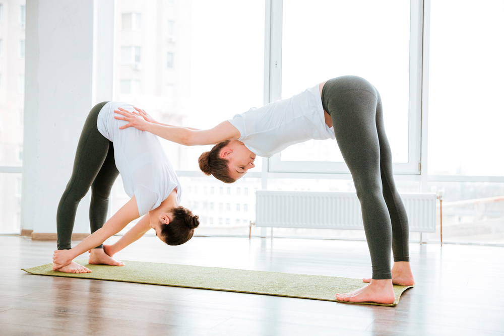

Seated and Supine Poses for Beginners
7:00 am - 11:00 am
Simon Park
Advanced
Welcome to part 5 of our beginner series with Simon Park!
Work Towards Compass Pose
7:00 am - 11:00 am
Simon Park
Advanced
Stretch shoulders, hips, and hamstrings as you work towards
Compass Pose (Parivrtta Surya Yantrasana).
Handstand Variations and Transitions
7:00 am - 11:00 am
Simon Park
Advanced
Explore handstand variations and transitions in this advanced
class. A brief warm up will prepare you to play with inversions!
Advanced Backbending
7:00 am - 11:00 am
Simon Park
Advanced
Amanda Botur has created a class to help you prepare for the
hormonal shifts and rising emotions that may occur in the days ...